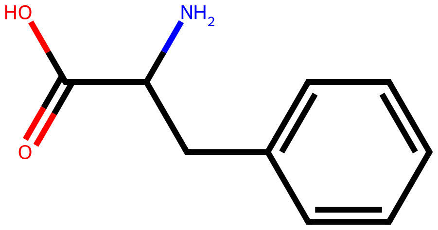
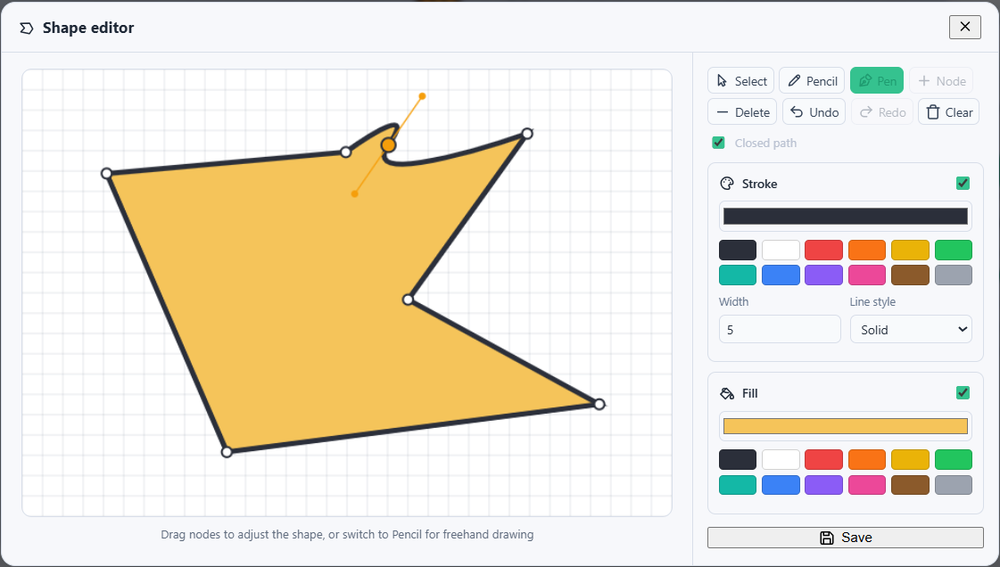

NewScribe user help
Shapes, charts and subject elements
Shape editor, charts, tables, QR codes, mind maps, formulas, molecules and IPA.



12. Shape editor#
Shapes are editable vector paths. Built-in shapes include rectangles, triangles, parallelograms, trapezoids, circles, arrows, stars, hearts and freeform paths.
Open the shape editor by double-clicking a shape, using “Edit shape” in the context menu, or using the button in the right panel.
The editor supports Bezier handles, a pen tool, freehand pencil, fill and stroke, line styles, undo/redo and SVG export.
13. Charts, tables, QR codes and mind maps#
Charts#
Charts support bar, line and pie views. Edit the title, series names, values, colours, legend and labels. Charts use a dedicated chart reveal.
Tables#
Tables support titles, adding/removing rows and columns, cell editing, border colour and font. Keep a table narrow enough to read on a phone.
QR codes#
QR codes support content, error correction level, foreground, background, transparent background and quiet-zone margin. A QR code in a video needs enough size, contrast and hold time; test it with a phone after export.
Mind maps#
Mind maps support node  text, fill, border, text colour, connector colour and spacing.
text, fill, border, text colour, connector colour and spacing.
14. Formulas, molecules and IPA#
Formulas use MathJax and mhchem. They support LaTeX, physics notation and chemical formulas such as \ce{H2O}.
A longer formula can be entered directly, for example:
-\sum_{k=1}^\infty \frac{(-x)^k}{(k-1)!\,\zeta(2k)}=f(x)Formula elements support the normal appearance, hold and  camera settings, and can be exported as SVG.
camera settings, and can be exported as SVG.
Molecules use RDKit to render SMILES as a skeletal formula. Templates include benzene, ethanol, caffeine and aspirin.
For example, enter c1ccc(cc1)CC(C(=O)O)N to generate the skeletal formula of phenylalanine. The generated SVG can be drawn, scaled and exported like any other element.
IPA uses X-SAMPA input, converts it to IPA and uses the built-in Noto Sans phonetic font.
All three support normal element animations and SVG export.
Keep formula font size large enough for superscripts and fractions. Check that nothing is clipped after export.